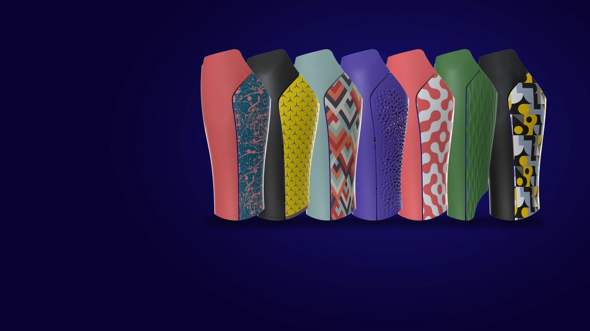
DisCover
Cover estetiche per protesi di arto inferiore, generate da un algoritmo e stampate in 3D direttamente al Centro Protesi INAIL.Aesthetic covers for lower-limb prostheses, generated by an algorithm and 3D printed in-house at Centro Protesi INAIL.
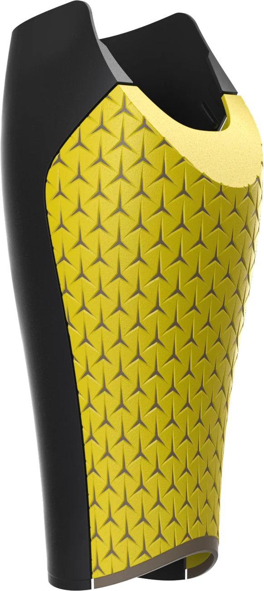
Due tesi, un prototipoTwo theses, one prototype
DisCover nasce da due tesi triennali in Design del prodotto industriale all'Università di Bologna. Enrico Bertonasso ha impostato il processo per le cover delle protesi transfemorali: un algoritmo parametrico in Grasshopper che genera la cover e la prepara per la stampa 3D. Giovanni Pasquali, in una tesi che ho seguito, ha applicato lo stesso approccio alle protesi transtibiali.DisCover comes from two bachelor's theses in Industrial Product Design at the University of Bologna. Enrico Bertonasso set up the process for transfemoral prosthesis covers: a parametric Grasshopper algorithm that generates the cover and prepares it for 3D printing. Giovanni Pasquali, in a thesis I supervised, applied the same approach to transtibial prostheses.
Alla fine delle tesi c'erano due prototipi funzionanti, testati su pochi pazienti. Mancava il passaggio a un processo di produzione.By the end of the theses there were two working prototypes, tested on a few patients. What was missing was the step to a production process.
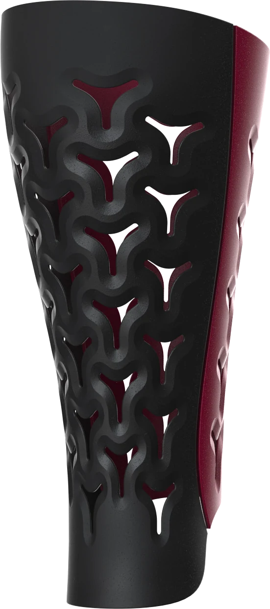
Da prototipo a processo di produzioneFrom prototype to production process
2-3 h2-3 hHo portato entrambi i prototipi in produzione e li ho riuniti in un unico processo: oggi modellare una cover richiede 2-3 ore, contro i 2-3 giorni iniziali.I took both prototypes into production and merged them into a single process: modeling a cover now takes 2-3 hours, down from 2-3 days.
Cover transfemoraliTransfemoral covers
- Da 2 a 14 ginocchi protesici compatibili: il prototipo copriva solo Ottobock 3R80 e Genium.From 2 to 14 compatible prosthetic knees: the prototype only covered Ottobock 3R80 and Genium.
- Nuovo sistema di attacco della cover al ginocchio.A new system for attaching the cover to the knee.
- Nervature di rinforzo e giunzione tra cover anteriore e posteriore ottimizzate.Optimized reinforcement ribs and joint between front and back cover.
- Texture 2D e 3D integrate nell'algoritmo.2D and 3D textures built into the algorithm.
Cover transtibialiTranstibial covers
- Algoritmo riscritto da zero: più leggero, fluido e veloce.Algorithm rewritten from scratch: lighter, smoother and faster.
- Eliminati i passaggi che, pur interessanti, rallentavano il calcolo e aumentavano gli errori, come l'allineamento automatico delle calamite.Removed steps that, however interesting, slowed the computation down and increased errors, such as the automatic alignment of the magnets.
Cover che si indossano ogni giornoCovers worn every day
Alcune delle cover prodotte al Centro, indossate dai pazienti che le hanno scelte.Some of the covers produced at the Centre, worn by the patients who chose them.


La stessa cover vista di lato, di fronte e da dietro.The same cover from the side, front and back.


Ogni paziente sceglie la sua coverEvery patient chooses their cover
Ho raccolto tutte le combinazioni in un catalogo che il tecnico sfoglia insieme al paziente. Cover anteriore e posteriore si scelgono separatamente; su richiesta si aggiungono grafiche personalizzate.I collected every combination in a catalog the technician browses together with the patient. Front and back covers are chosen separately; custom graphics can be added on request.
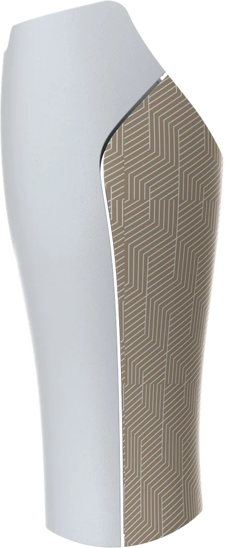
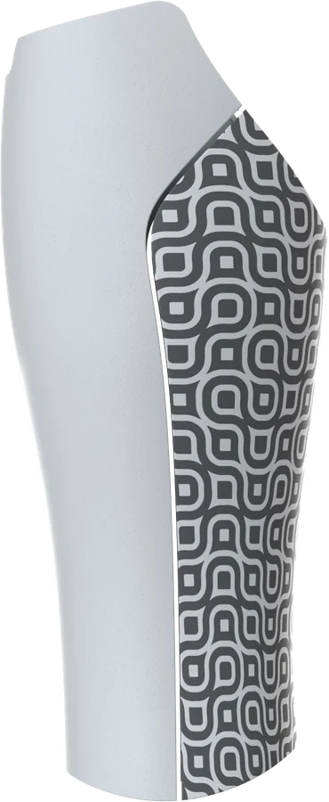
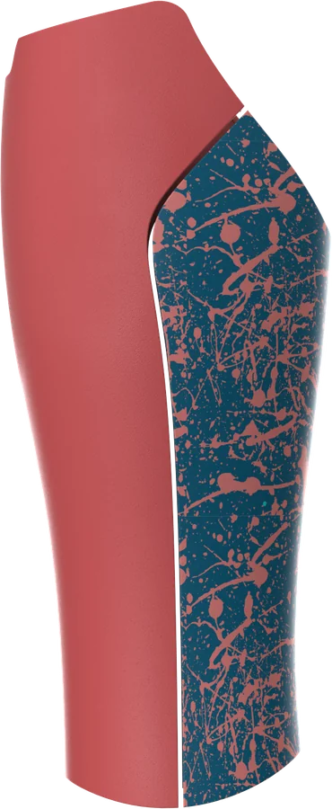
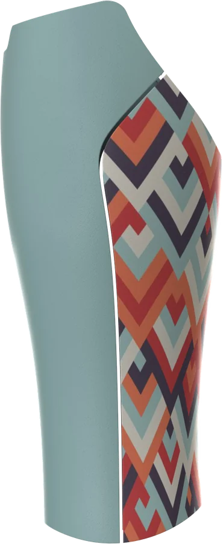
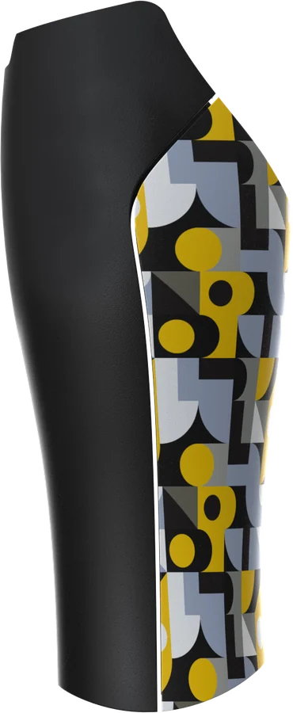
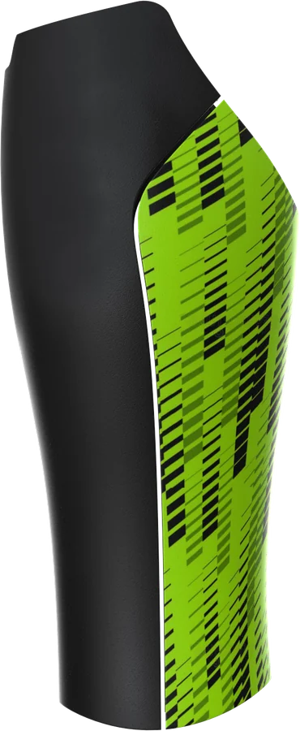
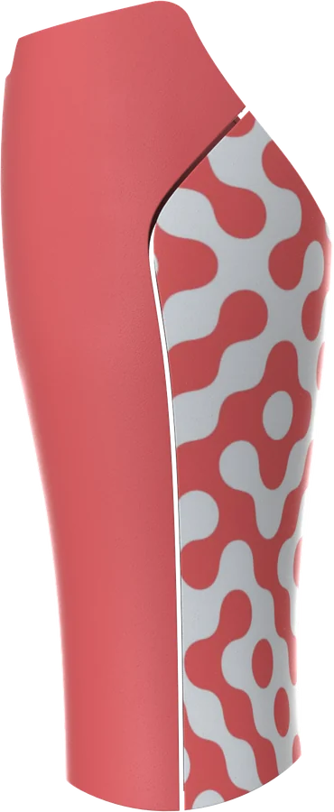
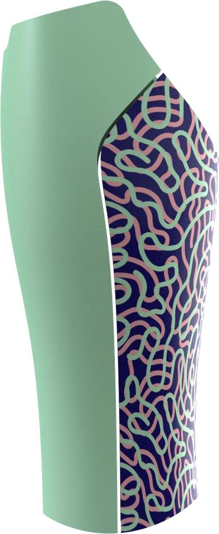
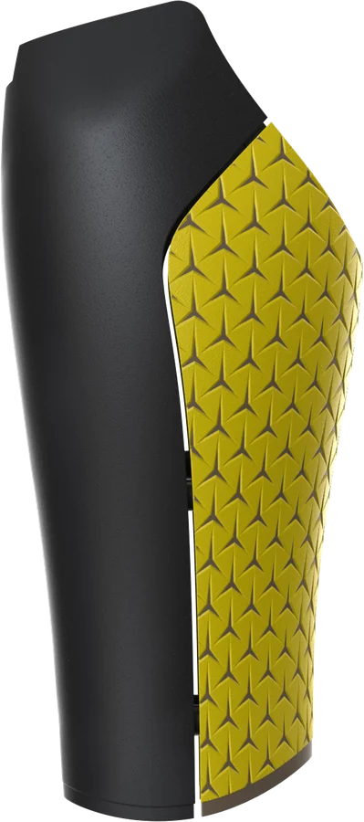
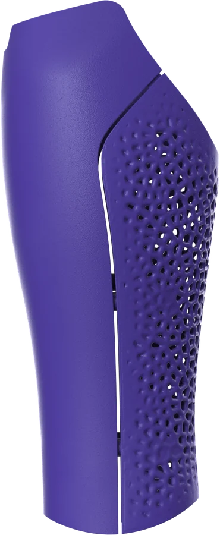
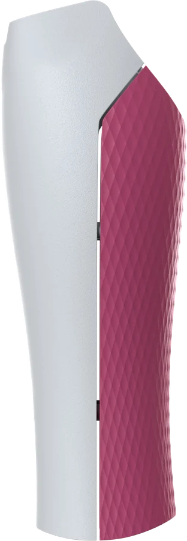
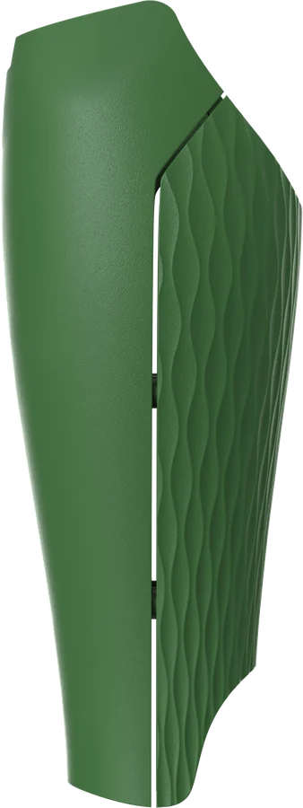
Render dal catalogo DisCover v3.0, stessa vista laterale per tutte le cover.Renders from the DisCover v3.0 catalog, same side view for every cover.
Una cover stampata, quattro visteOne printed cover, four views


Foto reali del pezzo stampato, da confrontare con i render.Real photos of the printed part, to compare with the renders.

Dalla prova alla produzioneFrom trial to production
20 → 60Nel 2025 abbiamo stampato 20 cover di prova. Nel 2026 le cover prodotte sono state 60: 35 transtibiali e 25 transfemorali.In 2025 we printed 20 trial covers. In 2026, 60 covers were produced: 35 transtibial and 25 transfemoral.
Le cover vengono stampate al Centro con HP Multi Jet Fusion in PA12, invece di essere acquistate da fornitori esterni, con un costo fino al 30% inferiore.The covers are printed at the Centre with HP Multi Jet Fusion in PA12 instead of being bought from external suppliers, at up to 30% lower cost.
ContestoContext
Centro Protesi INAIL, Vigorso di Budrio. Cover di prova nel 2025, in produzione dal 2026.Centro Protesi INAIL, Vigorso di Budrio. Trial covers in 2025, in production since 2026.
Il mio ruoloMy role
Sviluppo degli algoritmi per il passaggio in produzione, integrazione di cover transfemorali e transtibiali in un unico processo, catalogo DisCover, supervisione della tesi sulle cover transtibiali.Development of the algorithms for production, integration of transfemoral and transtibial covers into a single process, DisCover catalog, supervision of the thesis on transtibial covers.
Rhino · Grasshopper · HP Multi Jet Fusion
Tesi di origineOriginal theses
Enrico Bertonasso, Discover — Università di Bologna, 2022 (transfemorali)University of Bologna, 2022 (transfemoral)
Giovanni Pasquali, I-Cover — Università di Bologna, 2023 (transtibiali)University of Bologna, 2023 (transtibial)